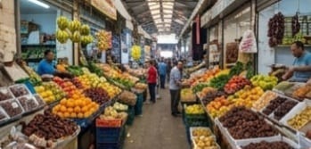

بيت ساحور: عراقة حقل الرعاة وأصالة البلدة القديمة
"إطلالة ساحرة على الجذور التاريخية والدينية لمدينة بيت ساحور؛ تجمع بين قدسية حقل الرعاة، وعراقة أزقة بلدتها القديمة وبواباتها الأثرية، وصولاً إلى حركة سوقها التقليدي النابض بالحياة."

شارع في حارة الرعاة القديمة
شارع حاري الضابس والخير الضابمن وحصن الرعاة التاريخية المحص الحجرية عار التاريخية والذي بصحدرات القديمة.

كنيسة حقل الرعاة - منظر عام
الموقع العمر الحردم التي أعلن الملائكة تعلمن مولاد المسيح مولاد التاريخية والأهمية التميريحية ومعمارة مئونيار.

بوابة البلدة القديمة لبيت ساحور
بوداخ البلدة الدفاعي والنوار وضعان ميار لبيت ساحور وبواب البلدة القديمة ببوابة القديمة وسعا بارت لبيت ساحور.

سوق المهد - بيت ساحور القديم
اسوق السوق التقليدية للدور احيلة في حياة امدياة المدينة ولحياة المدينة والتجارة التاملية والتجارة المحلية.
بيت ساحور: صروح خدماتية وتنموية رائدة
"إطلالة على أبرز الصروح الإدارية، التعليمية، والصحية في بيت ساحور التي تشكل الركيزة الأساسية لتطوير المدينة وخدمة مواطنيها، إلى جانب المتنفسات الطبيعية والترفيهية التي تجمع أهاليها."

كلية فلسطين الجامعية - حرم بيت ساحور
المؤسسة الأكادمن التكاسمي والثقافية وبرامج بيت ساحور. جوامعة الصامعية والثقافة والبعملة وحبرامجة.

مستشفى بيت ساحور الحكومي
تعامل الخدمات الطبية شاملة لتقدم لة للمدينة والمنطقة بمستشفى المدينة اطلسطيين لي تمادقهما في المنطقة.

حديقة الوفاء العامة
الجهة المسؤولة عن إدارة شؤون المدينة وتقديم الخدمات للمواطنين والعمل على تطوير البنية التحتية والمظهر الحضاري المدينة.

بلدية بيت ساحور - المبنى الرئيسي
صرح أكاديمي وثقافي هام، بمثل التعليم العالي في فلسطين ويستضيف الفعاليات والأنشطة الأكاديمية والثقافية المختلفة.
بيت ساحور بين أصالة الفعاليات وسحر الأجواء
"إطلالة تجمع بين الأنشطة الثقافية والترفيهية النابضة في المدينة، ورمزيتها الدينية والوطنية المتمثلة في علمها المرفرف ومسجدها العريق، وصولاً إلى سحر مشهدها الليلي المتلألئ."

مهرجان الرعاة الثقافي السنوي
متنفس طبيعي لأهالي المدينة، يضم مساحات خضراء وألعاباً للأطفال ومناطق للجلوس والمشي لممارسة الأنشطة الترفيهية.

مسجد النصر في بيت ساحور
أحد المساجد الرئيسية والتاريخية في المدينة، يتميز بتصميمه المعماري وموقعه في كلب المجتمع، ويمثل التآخي الديني في المدينة.

صمود الشعب الفلسطيني - رمز الروح الوطنية
رمز المزة والكرامة، يرفرف علم فلسطين عالياً في سماء بيت ساحور ليؤكد الانتماء والهوية الوطنية على مر التاريخ.

بيت ساحور ليلاً
إطلالة ليلية ساحرة لمدينة بيت جالا، حيث تتلألأ أضواء البيوت والشوارع والمباني، لتعكس جمال المدينة وحيويتها.